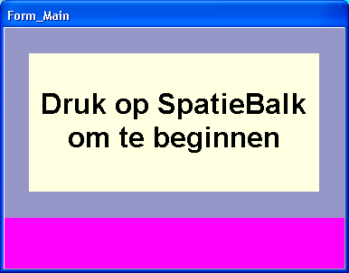
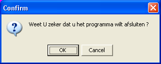

Spraak Opnemen (februari 2009)
Woord Vooraf
Opmerking vooraf, soms zijn de kleuren in de voorbeeldschermen in dit document zeer extreem gekozen, teneinde duidelijk de verschillende gebieden van het scherm te tonen. Bovendien zijn de plaatjes in dit document veel kleiner afgebeeld dan in werkelijkheid, waardoor soms de verhouding afwijken van de werkelijkheid.
Inleiding
Het programma toont achtereenvolgens een aantal plaatjes (of teksten), waarbij het kind bij ieder plaatje het afgebeelde woord moet uitspreken, dit noemen we in het vervolg een "taak". De door het kind uitgesproken tekst wordt opgenomen in een audio bestand. Om het kind wat te laten ontspannen, wordt af en toe tussen de opdrachten door een "beloning" gegeven (leuk plaatje, animatie o.i.d.).
Alle opdrachten die achtereenvolgens in één keer worden afgenomen, noemen we een "test".
Afnemen van een test
Voor het aanmaken / wijzigen van patient informatie en voor het selecteren van testen, wordt verwezen naar de handleiding van de TestOrganizer. Als een opname wordt gestart, wordt gehele scherm gevuld met de start boodschap.

Besturing / Toetsen tijdens het programma
|
Toets |
Omschrijving / funktie |
|
Spatie |
Ga naar de volgende opdracht (zowel vanuit een opdracht als vanuit een beloning) |
|
Ins |
Herhaal de voorgesproken tekst |
|
Alt |
Toon de volgende alternatieve opdracht |
|
/ of ? |
Toggle het tonen van de volume potmeters |
|
Esc |
Beëindig het programma (er verschijnt nog een bevestigings vraag) |
|
PgUp |
"Leg de lat hoger", verhoog het aantal opdrachten voordat een beloning verschijnt |
|
PgDn |
"Leg de lat lager", verlaag het aantal opdrachten voordat een beloning verschijnt |
|
Home |
Laat een beloning verschijnen na afloop van deze opdracht |
Programma Afsluiten
Het programma kan op ieder moment worden afgesloten door het indrukken van de escape-toets (ESC), uiteraard wordt wel om een bevestiging gevraagd. Als een test eenmaal is afgesloten, kan deze niet later nog eens geopend worden om te worden aangevuld. In dat geval moet er een nieuwe test worden gestart, eventueel de eerder reeds opgenomen antwoorden overslaan en de resterende antwoorden opnemen. Bij het transcriberen kunnen dan beide opnames worden samengevoegd, maar handig is het niet !! Als een opnamen wordt afgesloten, wordt deze in de TestOrganizer afgevinkt.
